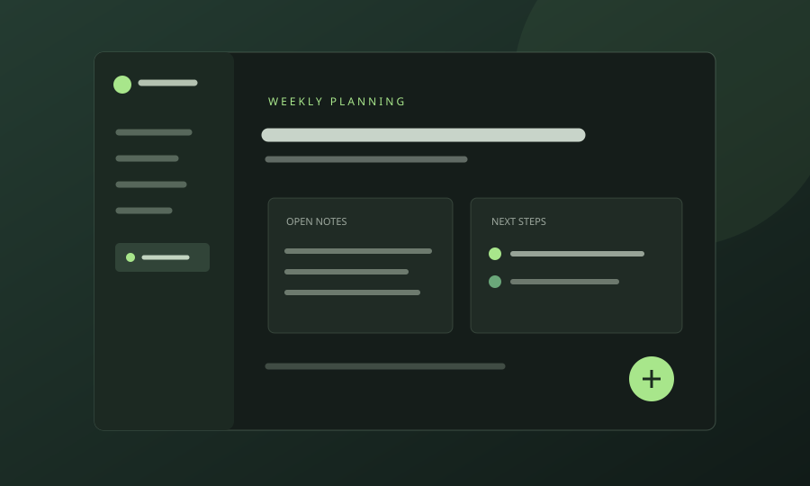
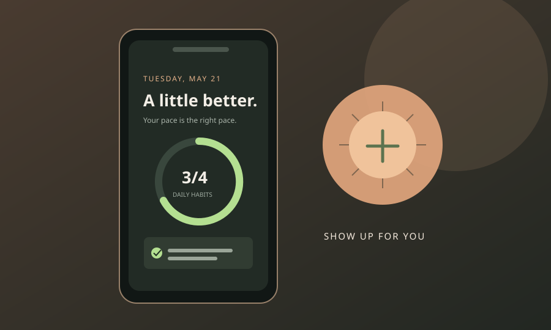
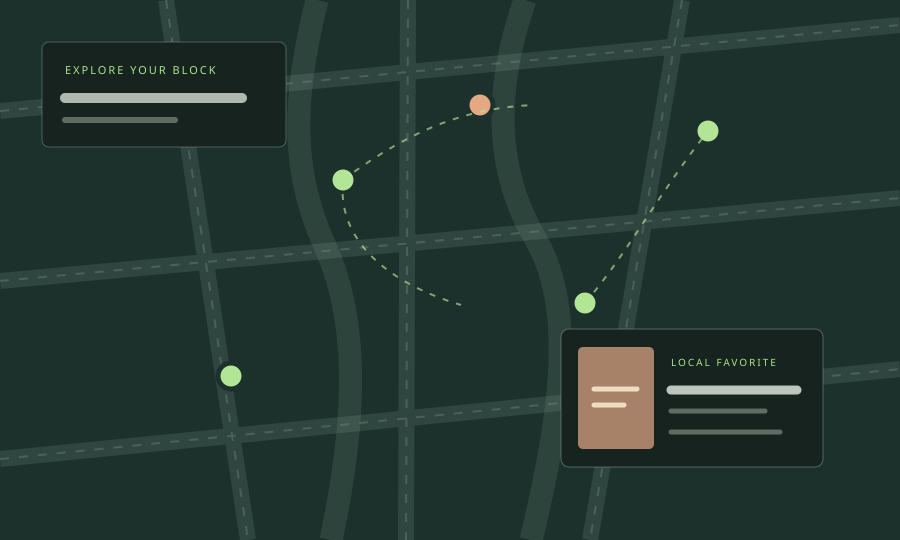
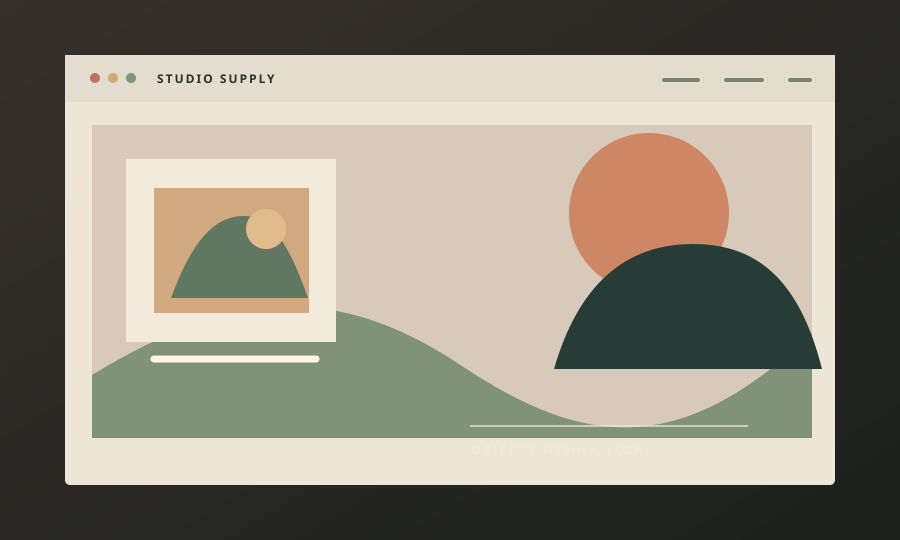

MODEL
AI & machine learning
Choosing and shaping models around the problem.
PythonPyTorchTransformersScikit-learn
OPEN TO AI & SOFTWARE PROJECTS
AI developer + product-minded engineer
I build useful AI products—from language-model workflows and retrieval systems to machine-learning applications—turning promising ideas into experiences people can trust.

AI, BUILT FOR PEOPLE
I’m Samkesh, an AI developer focused on applications that solve real problems. I combine language models, machine learning, and product engineering to build tools that are useful, understandable, and dependable.
From retrieval pipelines and model integrations to evaluations, APIs, and polished interfaces, I work across the product lifecycle: prototype quickly, measure quality, and improve with real feedback.
Download résuméTHE STACK I BUILD WITH
Models, product engineering
and the systems around them.
Choosing and shaping models around the problem.
Grounded, testable workflows beyond a prompt.
Taking a model-backed idea into a reliable product.
AI IDEAS, BUILT END TO END

↗A document assistant that retrieves relevant sources, drafts grounded answers, and links each response back to its evidence.

↗An image-analysis workflow that identifies visual anomalies, surfaces confidence scores, and keeps a human in the review loop.

↗A time-series forecasting tool that turns operational data into interpretable projections, anomaly flags, and clear next steps.

↗A tool-using assistant for repetitive team workflows, with clear approvals, reliable handoffs, and an audit-friendly activity trail.
CURIOSITY OUTSIDE THE MODEL
Build with focus. Keep learning.
Make time to reset.
Strength training / Trail runs / Long walks
Reading / Journaling / Learning out loud
Film photography / Cooking / Side projects
“The best way to understand an idea is to build something with it, test it, and keep improving.
— A BUILDER’S REMINDER
HOW I GOT HERE
From experiments to useful products, I focus on practical AI that earns its place.
Independent AI Projects · Your Location
Designing and prototyping AI applications, from retrieval-augmented generation and model evaluation to tool-using assistants. Focused on useful outcomes, transparent behavior, and reliable product experiences.
Applied ML Work · Remote
Built data preparation and inference pipelines, experimented with classification and forecasting models, and connected model outputs to straightforward interfaces and APIs.
Your University · Your Location
Built foundations in programming, algorithms, data, and software design, then applied them through hands-on machine-learning projects.
HAVE AN AI IDEA?
Have an AI product idea, a model integration challenge, or a question about my work? Send a note and tell me what you’re exploring.
hello@example.com